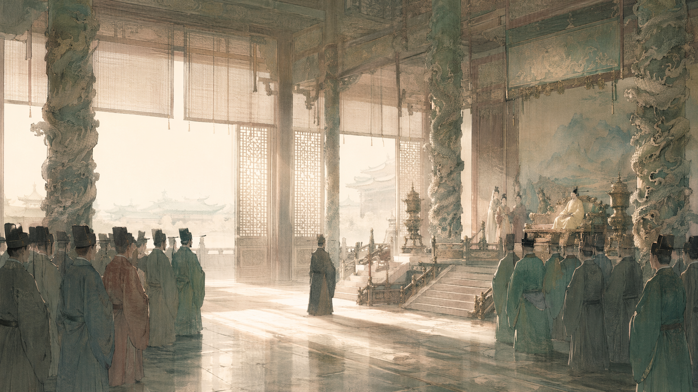
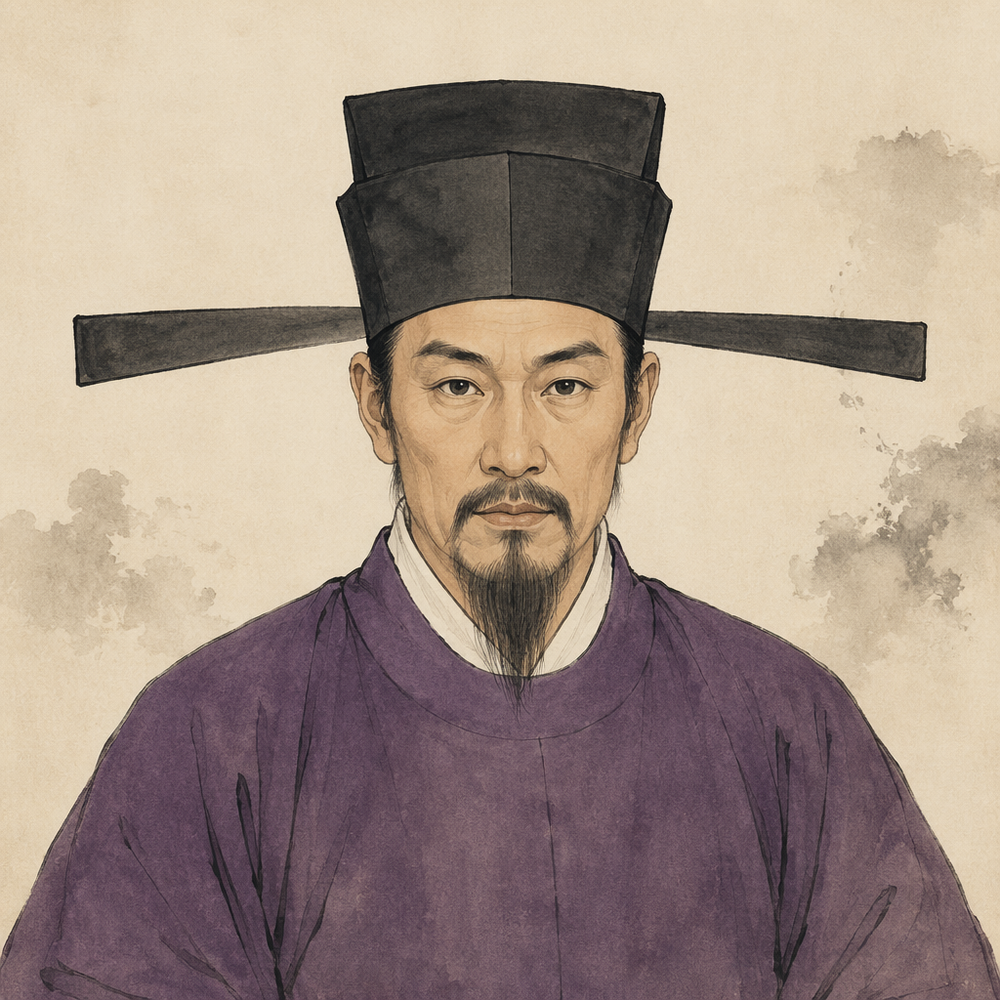
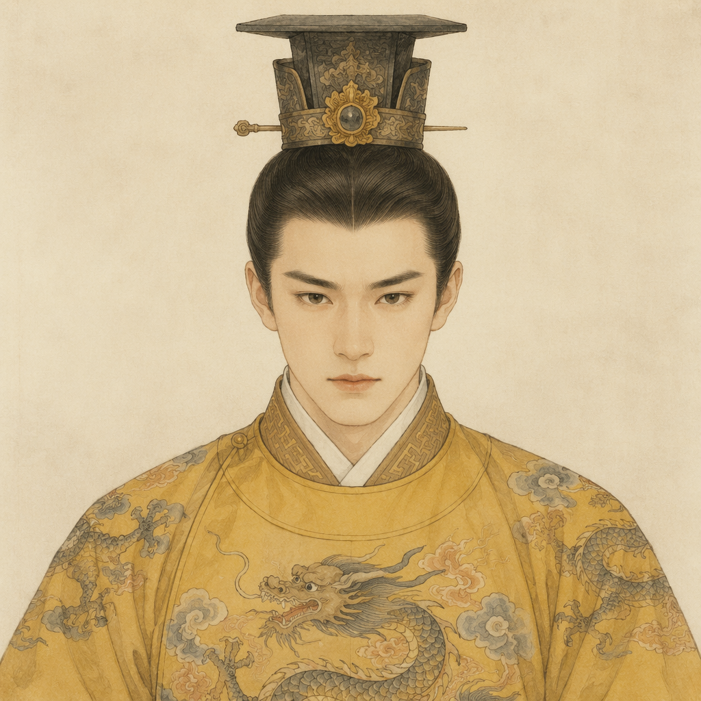
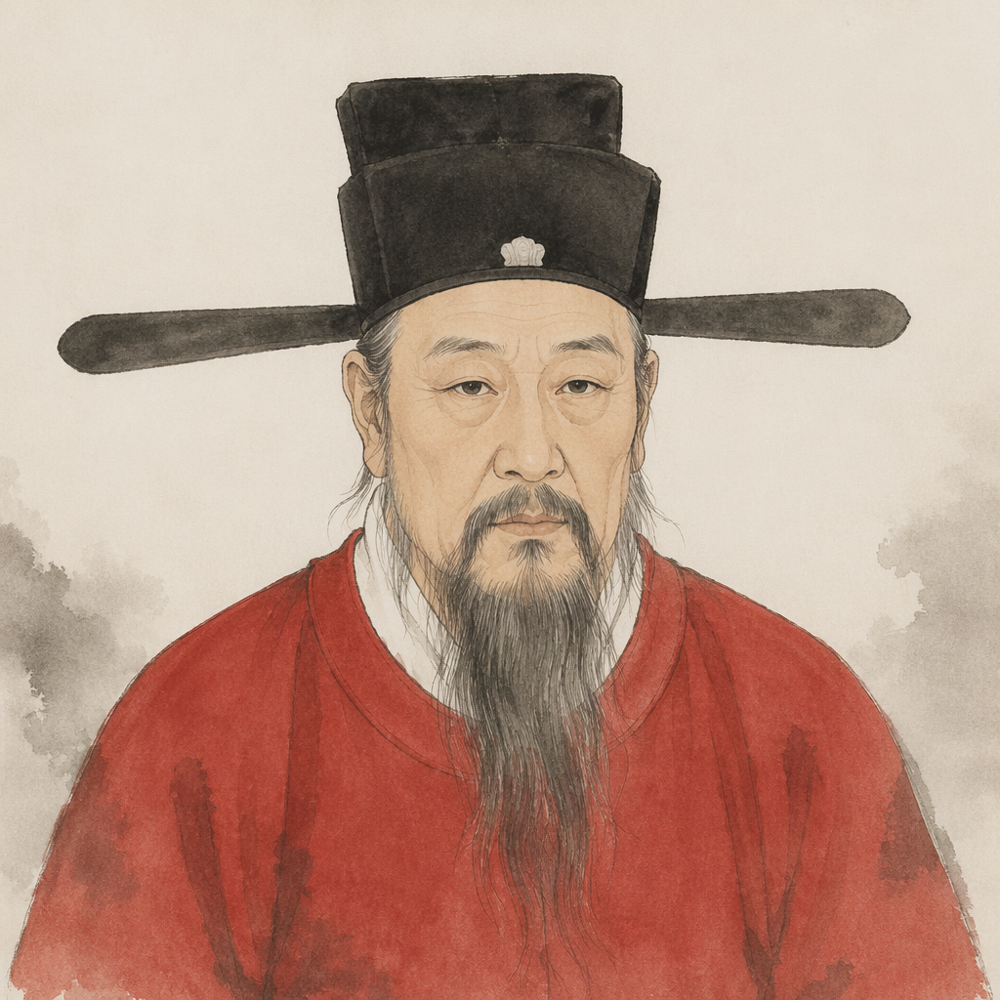
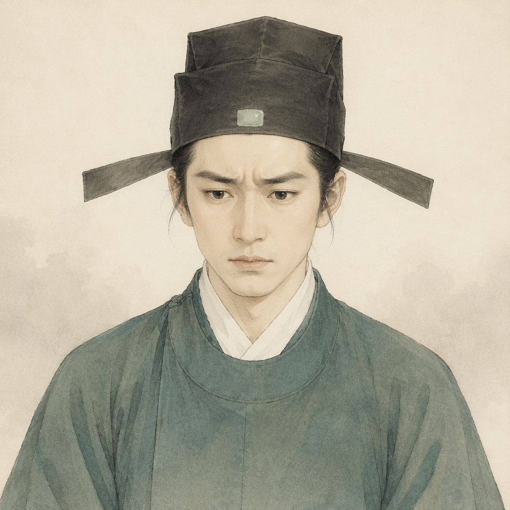

朝堂
晨钟自宣德门外传来。
你睁眼，铜镜里是一张陌生又熟悉的脸——王安石。
熙宁年间，国库吃紧、军力疲弱、豪强坐大。
变法的刀，今日就要落下。

王安石
宋神宗
司马光
郑侠
本作《回到大宋当宰相·王安石变法》的灾情主线，取材自文章《熙宁七年的雨》（撰文／曾雄生）。
熙宁七年（1074）春，京东、河北久旱不雨，旱极而蝗，流民塞道。地方官报雨量「一寸则云三寸，三寸则云一尺，多不以其实」，皇帝竟亲自掘地验雨。监安上门小吏郑侠绘《流民图》直送御前，以性命作保「十日不雨，乞斩臣」，更言「天旱由王安石所致，若罢安石，天必雨」。一图冲决禁城红墙，太后泣言「安石乱天下」，王安石遂罢相。
游戏中的旱极而蝗、一寸报三寸、流民图、天变不足畏、罢相离京绝句等情节与文句，皆本于此文。文章结语云：「呜呼！熙宁七年，果然是雨点小，而雷声大。」
「苏子寄诗」一幕中，苏轼熙宁四年上《上神宗皇帝书》力陈青苗、助役之弊，自请外放、通判杭州，所引诗句出自其《吴中田妇叹》（「卖牛纳税拆屋炊……不如却作河伯妇」），写新法之下江南农户的困苦。各结局的「时人评说」为依人物立场所作的互动改编点评。
背景音乐：《Guzheng City》，作者 Kevin MacLeod（incompetech.com），授权 CC BY 4.0（古筝纯音乐，可商用，注明出处即可）。
注：剧情为互动改编，史实细节请以正史与原文为准。